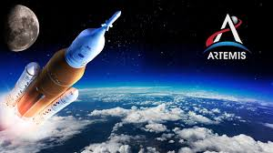
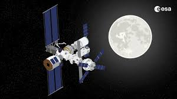

Future
The future of space exploration is poised to take humanity beyond Earth's orbit, with goals of returning to the Moon and establishing bases on Mars. The next generation of space exploration will rely heavily on advancements in technology, including reusable rockets, sustainable habitats, and autonomous systems.
With the advent of new programs like NASA's Artemis and SpaceX's Mars Colonization, humans are closer than ever to becoming a multi-planetary species.
Key Upcoming Space Programs
NASA's Artemis Program
The Artemis Program is NASA's mission to return humans to the Moon by 2025. It aims to land the first woman and the next man on the lunar surface, establish a sustainable presence on the Moon, and pave the way for future missions to Mars. The program also involves building the Lunar Gateway, a space station that will orbit the Moon and serve as a base for lunar exploration.
SpaceX's Mars Colonization
SpaceX's Mars Colonization project, spearheaded by CEO Elon Musk, aims to establish a permanent human settlement on Mars. The company's Starship spacecraft is being developed to carry large numbers of people and cargo to Mars. SpaceX envisions sending the first crewed mission to Mars within the next decade, making humanity a multi-planetary species.
ESA's Lunar Gateway
The Lunar Gateway is a collaborative project involving NASA, ESA, and other space agencies. The Gateway will serve as a multi-purpose outpost orbiting the Moon, supporting lunar missions and providing a platform for deep space exploration. Its modular design will allow for international cooperation and contributions from multiple spacefaring nations.